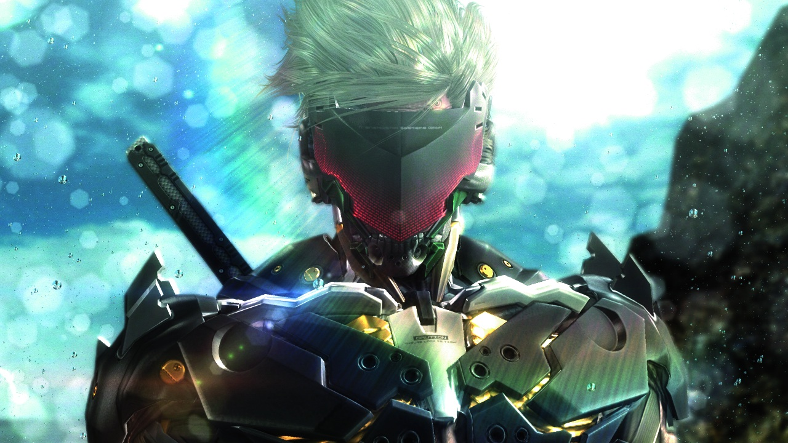
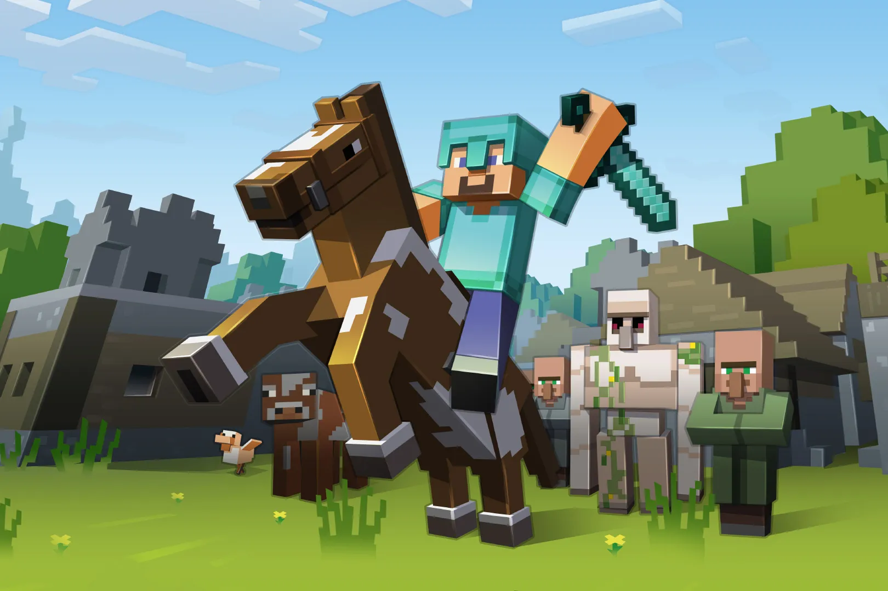
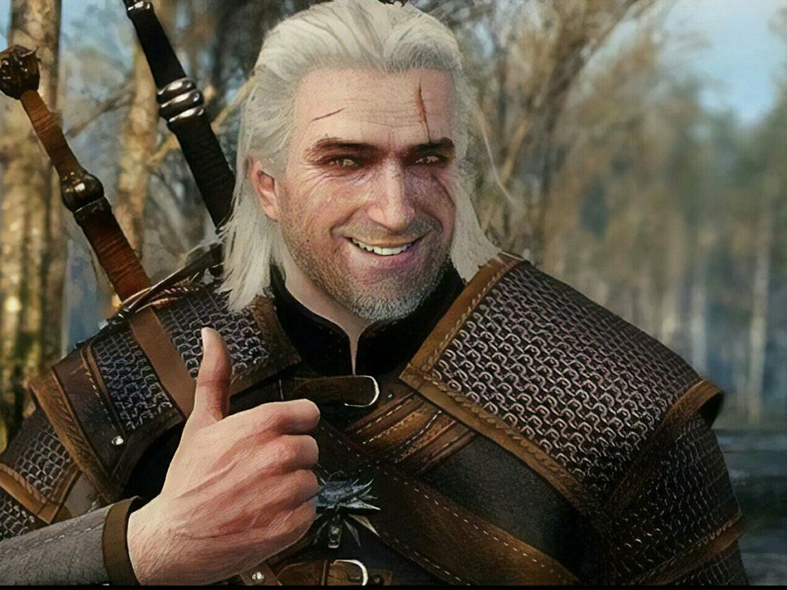
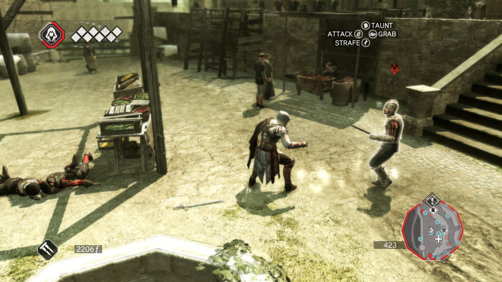
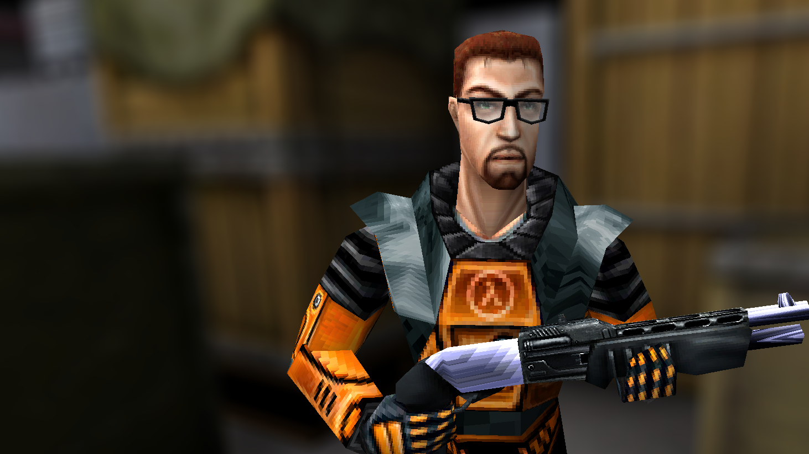
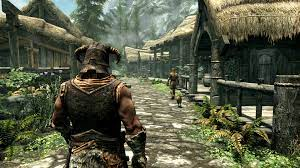

1_Red dead redemption 2
رد دد ردمپشن ۲ (انگلیسی: Red Dead Redemption 2) (کوتاه شده: RDR2) یک بازی ویدئویی اکشن-ماجراجویی در سال ۲۰۱۸ است که توسط راکاستار گیمز توسعه و منتشر شدهاست. این بازی سومین نسخه از سری رد دد است و پیشدرآمد بازی رد دد ریدمپشن در سال ۲۰۱۰ است. رد دد ردمپشن ۲ در جوایز بازی سال ۲۰۱۸ در هشت رشته نامزد شد و توانست چهار جایزه شامل بهترین موسیقی و روایت داستانی را برنده شود. داستان رد دد ردمپشن ۲ وقایع پیش از نسخه اول این بازی را در بر میگیرد. بازی در سال ۱۸۹۹ رخ میدهد و داستان یکی از گروههای یاغی از غرب وحشی که گروه وندر لیند نام دارد را روایت میکند و بازیکن در نقش یکی از اعضای این گنگ به نام آرتور مورگان و در ادامه جان مارستون را بازی میکند .
My Score = 9.6
2_Metal gear rising
متال گیر طلوع: انتقام دوباره (به ژاپنی: メタルギア ライジング リベンジェンス ,Metaru Gia Raijingu: Ribenjensu) یک بازی ویدئویی به سبک هک اند اسلش و اکشن از مجموعه بازیهای متال گیر است که ابتدا قرار بود توسط هیدئو کوجیما ساخته شود ولی در نهایت توسط پلاتینیوم گیمز توسعه یافت و شرکت بازیسازی کونامی آن را منتشر کرد. متال گیر طلوع: انتقام دوباره نهمین بخش در تمام سری متال گیر بهشمار میرود که رخدادهای آن چهار سال بعد از متال گیر سالید ۴: سلاحهای میهنپرستان اتفاق میافتد. این بازی در ای۳ ۲۰۰۹ برای اکسباکس ۳۶۰[۱] پلیاستیشن ۳ و مایکروسافت ویندوز[۲][۳][۴][۵] معرفی شد و از عناوین انحصاری پلیاستیشن ۳ خارج گشت.همچنین از این بازی با عنوان یکی از بازی هایی که با آن بیشترین میم اینترنتی ساخته شده است یاد میشود.
My Score = 8.4

3_Ac BlackFlag
ساسینز کرید ۴: پرچم سیاه (به انگلیسی: Assassin's Creed IV: Black Flag) یک بازی ویدئویی در سبک تاریخی، اکشن-ماجراجویی، مخفیکاری و جهان باز است که توسط استودیو یوبیسافت مونترال طراحی و ساخته شدهاست. عرضه جهانی این بازی برای سه کنسول بازی پلیاستیشن ۳، ایکسباکس ۳۶۰ و وی یو، در ۲۹ اکتبر ۲۰۱۳ انجام پذیرفت. نسخههای ویژه پلیاستیشن ۴ و ایکسباکس وان نیز به ترتیب در ۱۵ و ۲۲ نوامبر ۲۰۱۳ و سرانجام نسخه مایکروسافت ویندوز آن نیز در ۱۹ نوامبر ۲۰۱۳ منتشر شد. این بازی، نهمین عنوان منتشر شده از اساسینز کرید و همینطور ششمین شماره از سری اصلی بازیهای اساسینز کرید است. رویدادهای این بازی در دوران طلایی دزدی دریایی رخ میدهد؛ جایی که ادوارد کنوی به عنوان یکی دیگر از شخصیتهای خیالی خط خون الطائر ابن لا احد، در نقش یک اساسین ظاهر شده و این بار کارائیب ابتدای قرن هفدهم را به عنوان قسمتی دیگر از تاریخ، بازگویی میکند. شخصیت اصلی بازی پدر بزرگ کانر خواهد بود.
My Score = 7.7
4_MC
ماینکرفت (به انگلیسی: Minecraft) یک بازی ویدیویی سندباکس و جهان باز است که توسط موجنگ استودیوز ساخته و برای رایانه، موبایل و کنسول منتشر شدهاست. این بازی توسط مارکوس پرسون خلق و با زبان برنامهنویسی جاوا نوشته شدهاست. پس از چندین نسخهٔ آزمایشی خصوصی اولیه، ماینکرفت اولین بار در ماه مه سال ۲۰۰۹ منتشر شد و قبل از انتشار کامل آن در نوامبر ۲۰۱۱، ینس برگنستن توسعه را به دست گرفت. ماینکرفت از آن زمان به چندین سیستم عامل دیگر نیز منتقل شدهاست و با فروش بیش از ۲۳۸ میلیون نسخه و با داشتن بیش از ۱۴۸ میلیون کاربر فعال ماهانه، از سال ۲۰۲۰ پرفروشترین بازی ویدئویی در تمام دوران است؛ همچنین برخی از افراد این بازی را به عنوان بهترین بازی ویدیویی تاریخ میشناسند.
My Score = 8.5
5_Witcher 3
ویچر ۳: وایلد هانت (انگلیسی: The Witcher 3: Wild Hunt؛ لهستانی: Wiedźmin 3: Dziki Gon) بازی ویدئویی نقشآفرینی-اکشن است که توسط توسعهدهندهٔ لهستانی سیدی پروجکت توسعه یافت و برای نخستین بار در سال ۲۰۱۵ منتشر شد. این بازی دنبالهای برای بازیهای ویچر (۲۰۰۷) ویچر ۲: قاتلین پادشاهان (۲۰۱۱) است و سومین بازی در سری بازی ویدئویی ویچر بهشمار میرود. ویچر ۳ جهان باز است و شیوه روایت سومشخص دارد. بازیها، اقتباسی از رمانهای خیالپردازی ویچر به نویسندگی آندژی ساپکوفسکی هستند. بازی در یک جهان خیالی بر پایهٔ اساطیر اسلاو رخ میدهد. بازیکن کنترل شخصیت گرالت از ریویا را در دست میگیرد که یک شکارچی هیولاکش یا یک «ویچر» است و به دنبال دخترخواندهاش، سیری، که در حال فرار از وایلد هانت است میگردد. بازیکنان توسط اسلحهها و جادوهای گوناگون با خطرات بازی میجنگند، با شخصیتهای غیرقابل بازی ارتباط برقرار میکنند و مأموریتهایی برای به دست آوردن اکسپی و طلا انجام میدهند که برای ارتقاء تواناییهای گرالت و خرید لوازم به کار برده میشوند. داستان ویچر ۳ سه پایان ممکن دارد که توسط انتخابهای بازیکنان در نقاط کلیدی روایت تعیین میشود
My Score = 8.7
6_CyberPunk
سایبرپانک ۲۰۷۷ (به انگلیسی: Cyberpunk 2077) یک بازی ویدئویی در سبک نقشآفرینی اکشن است که توسط سیدی پروجکت رد توسعه یافته و در ۱۰ دسامبر ۲۰۲۰ برای مایکروسافت ویندوز، گوگل استادیا و کنسولهای پلیاستیشن ۴ و اکسباکس وان منتشر شدهاست. و در ۱۵ فوریه ۲۰۲۲ برای پلیاستیشن ۵ و اکسباکس سری اکس/اس عرضه شد. در تریلر نمایش داده شده در E3 2019 مشخص شد که کیانو ریوز، هنرپیشه کانادایی، با استفاده از موشِن کَپچِر و صداگذاری در نقش شخصیت جانی سیلورهند ایفای نقش میکند. این بازی برگرفته از فرنچایز سایبرپانک است و داستان آن در پادآرمانشهر نایت سیتی، جهانی باز که از ۶ منطقهی مشخص تشکیل شده است اتفاق میافتد. در این بازی که از زاویه دید اول شخص دنبال میشود بازیکن کنترل یک فرد مزدور با عنوان V را در دست خواهد داشت که میتواند با کسب تجربه در سه کلاس مهارت کسب کند.
My Score = 9
7_AC2
اساسینز کرید ۲، کیش یک آدمکش ۲، فرقه اساسین ۲(به انگلیسی: Assassin's Creed II) یک بازی ویدئویی در سبک اکشن-ماجراجویی و مخفیکاری و دومین قسمت از مجموعه بازیهای اساسینز کرید است که توسط استودیوی یوبیسافت مونترآل ساخته شده، و بوسیلهٔ یوبیسافت منتشر شد. این بازی داستانی غیرخطی دارد و در نوامبر ۲۰۰۹ برای کنسولهای پلیاستیشن ۳ و اکسباکس ۳۶۰؛ و در سال ۲۰۱۰ برای سیستم عاملهای مایکروسافت ویندوز و مکاواس ساخته شدهاست.[۱][۶] ادامهای بر این بازی با عنوان اساسینز کرید: برادری در سال ۲۰۱۰ منتشر شد. همچنین این بازی رتبه اول بهترین بازی مجموعه بازی اساسین کرید از لحاظ نمره متاکریتیک میباشد
My Score = 7
8_Half Life1
نیمهعمر (به انگلیسی: Half life) یک بازی ویدئویی علمی–تخیلی به سبک تیراندازی اول شخص است که توسط شرکت ولو ساخته شدهاست و اولین قسمت از مجموعه بازیهای رایانهای نیمهعمر است. این بازی توسط شرکت سییرا برای مایکروسافت ویندوز منتشر شدهاست و علاوه بر آن یک نسخهٔ سازگار شده نیز توسط گیرباکس سافتور برای کنسول پلیاستیشن ۲ عرضه شدهاست.[۶] در نیمهعمر بازیکن نقش دکتر گوردون فریمن را بهدست میگیرد، او یک دانشمند فیزیک نظری است که باید راه فراری از یک آزمایشگاه مخفی به بیرون، و همچنین راهی به جبران تحقیقاتی سری که به اشتباه موجب ایجاد درگاهی به جهان موجودات عجیب الخلقهای که قصد نابودی بشر را دارند، پیدا کند.
My Score = 8.2
9_Skyrim
الدر اسکورولز ۵: اسکایریم (به انگلیسی: The Elder Scrolls V: Skyrim) یک بازی ویدئویی به سبک نقشآفرینی اکشن و جهان باز است که توسط بتزدا گیم استودیوز توسعه یافته و شرکت بتزدا سافتورکز در ۱۱ نوامبر ۲۰۱۱ (به اختصار ۱۱.۱۱.۱۱)، آن را برای پلتفرمهای مایکروسافت ویندوز، پلیاستیشن ۳، و ایکسباکس ۳۶۰ منتشر کردهاست. اسکایریم پنجمین قسمت در مجموعه بازیهای الدر اسکورولز و پس از نسخه الدر اسکورولز ۴: آبلیویئن بهشمار میرود. این بازی توانست بهترین بازی سال از طرف بسیاری از سایتها مانند گیماسپات شود. وقایع اسکایریم دویست سال بعد از آبلیویئن و در دنیایی ساختگی به نام اسکایریم رخ میدهد.
My Score = 8

10_Sekiro
سکیرو: سایهها دو بار میمیرند (به انگلیسی: Sekiro: Shadows Die Twice) یک بازی ویدئویی در سبک اکشن-ماجراجویی است که توسط شرکت فرام سافتور توسعه یافته شده و بهوسیلهٔ اکتیویژن در ۲۲ مارس ۲۰۱۹ برای مایکروسافت ویندوز، پلیاستیشن ۴، و اکسباکس وان، و ۲۸ اکتبر ۲۰۲۰ برای استادیا منتشر شد. این بازی برای نخستین بار با یک تیزر در جشنواره جوایز بازی سال ۲۰۱۷، با نام «سایهها دو بار میمیرند» نشان داده شد، و سپس بازی با عنوان کامل سکیرو: سایهها دو بار میمیرند، در نمایشگاه رسانه و تجارت ای۳ ۲۰۱۸ و در طی کنفرانس مطبوعاتی شرکت مایکروسافت رونمایی شد. همچنین این بازی در مراسم گیم اواردز سال ۲۰۱۹ در رقابت با عناوینی همچون دث استرندینگ و… توانست به عنوان بهترین بازی سال انتخاب شود.
My Score = 6.6